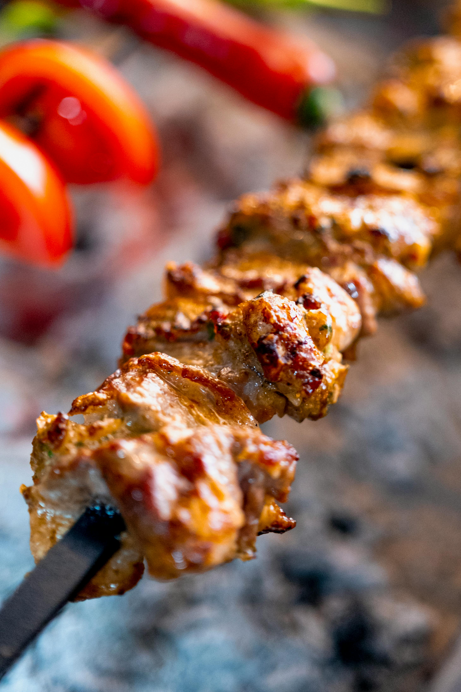

Back to Home
Chicken Skewers

Description
For these zesty Mississippi chicken skewers, boneless thigh pieces marinate briefly in ranch seasoning and pepperoncini brine, then are threaded on skewers with pepperoncini and red onion chunks.
Ingredients
- 1 (1 ounce) packet ranch seasoning mix, divided
- 1 (1 ounce) package au jus seasoning mix, divided
- 2 pounds skinless boneless chicken thighs, cut into 2-inch pieces
- 3 tablespoons olive oil
- 15 pepperoncini peppers, divided
- 1 red onion, cut into 2-inch pieces
- 1/4 cup pepperoncini brine, divided
- 6 tablespoons cold butter, divided
Steps
- Remove 1 tablespoon of ranch and au jus seasoning mix from each package and set aside.
- Add chicken to a bowl; add remaining ranch seasoning, remaining au jus seasoning, olive oil, and 2 tablespoons pepperoncini brine to the bowl. Toss well and let stand for 20 to 30 minutes.
- Preheat the oven to 375 degrees F (190 degrees C). Divide and thread chicken, 12 pepperoncini peppers, and onion evenly among skewers.
- Heat a grill or grill pan to medium-high heat, about 425 degrees F (220 degrees C). Lightly coat grill grates and place skewers on hot grill or grill pan. Cook until browned and easily released from grill, about 2 minutes on each side. Transfer to a rimmed baking sheet.
- Bake skewers in the preheated oven for 15 minutes. An instant read thermometer inserted in the center of chicken pieces should read 165 degrees F (74 degrees C).
- Serve skewers with butter sauce.